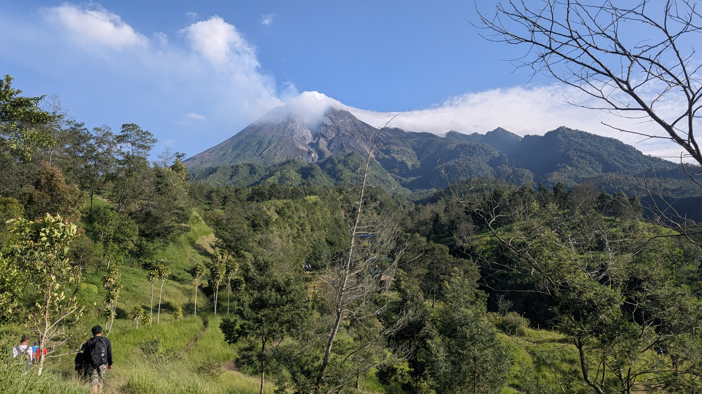
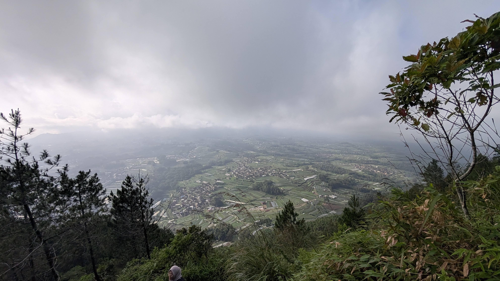

Perjalanan Favorit

Gunung Merbabu
Menikmati savana indah dan sunrise yang menenangkan.

Kalitalang
Tempat terbaik untuk melihat golden sunrise.

Gunung Andong
Perjalanan penuh tantangan dengan pemandangan luar biasa.